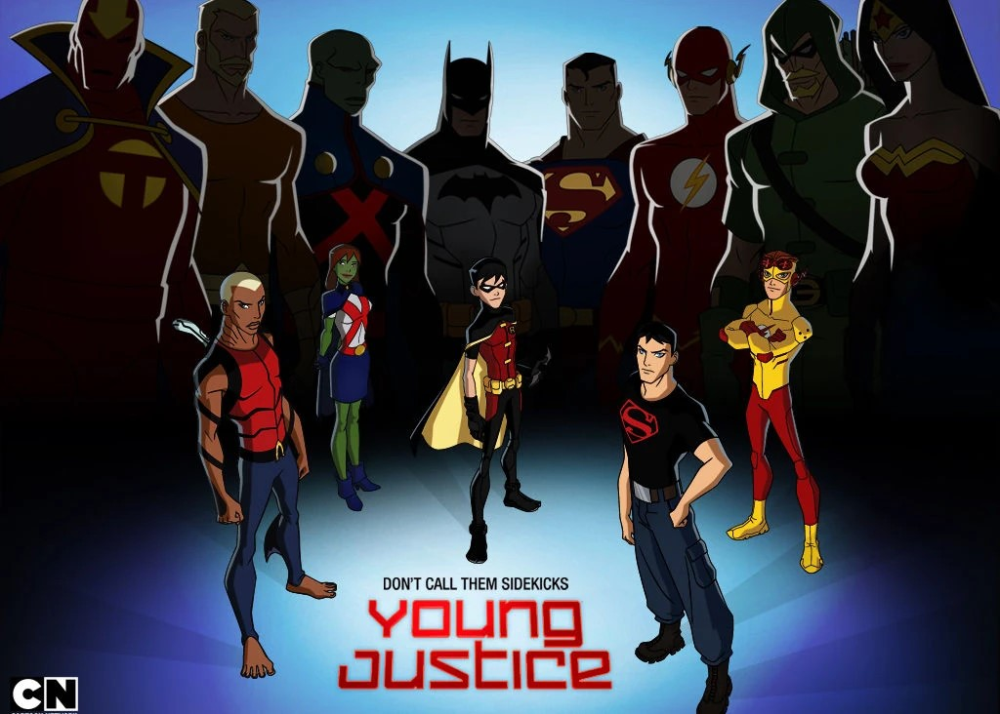
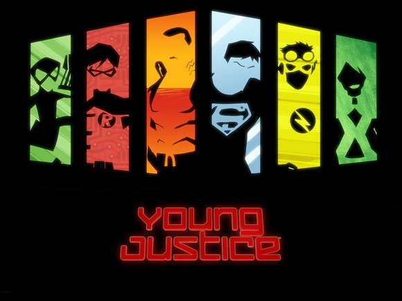

Superboy é a versão jovem do icônico Superman, um adolescente com habilidades sobre-humanas que luta contra o crime enquanto enfrenta os desafios de ser um herói em crescimento.
Go somewhereAqualed é uma versão alternativa do Aquaman, um herói dos quadrinhos com poderes aquáticos e uma conexão profunda com o oceano, combinando força sobre-humana com a capacidade de controlar e se comunicar com criaturas marinhas.
Go somewhereRobin é o jovem parceiro do Batman, um habilidoso acrobata e combatente do crime que traz astúcia, coragem e uma personalidade determinada para combater a injustiça ao lado do Cavaleiro das Trevas.
Go somewhereKid Flash é o alter ego de vários personagens nos quadrinhos da DC, incluindo Wally West e Bart Allen. Ele é conhecido por sua velocidade sobre-humana, humor leve e sua contribuição essencial para a equipe dos Jovens Titãs.
Go somewhereMiss Marte, ou M'gann M'orzz, é uma marciana branca com habilidades telepáticas, de transformação e força sobre-humana, além de ser uma heroína compassiva e leal.
Go somewhereArtemis é uma heroína dos Jovens Titãs e conhecida por suas habilidades de arqueira excepcionais, coragem e determinação inabalável no combate ao crime.
Go somewhere